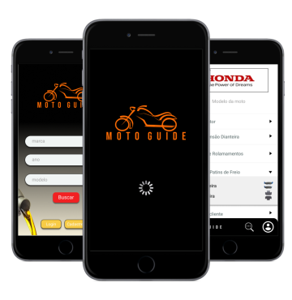

Sobre a Moto Guide
A Moto Guide é um guia rapido para motociclistas e profissionais do ramo, que surgiu atraves do projeto de encerramento do 1º modulo do curso de Desenolvimento de Sistemas. era pra ser um guia com todos os catalogos de motos, mas depois de algumas pesquisas, foi constatado que exte um deficit na interação entre pequenas oficinas e clintes.
